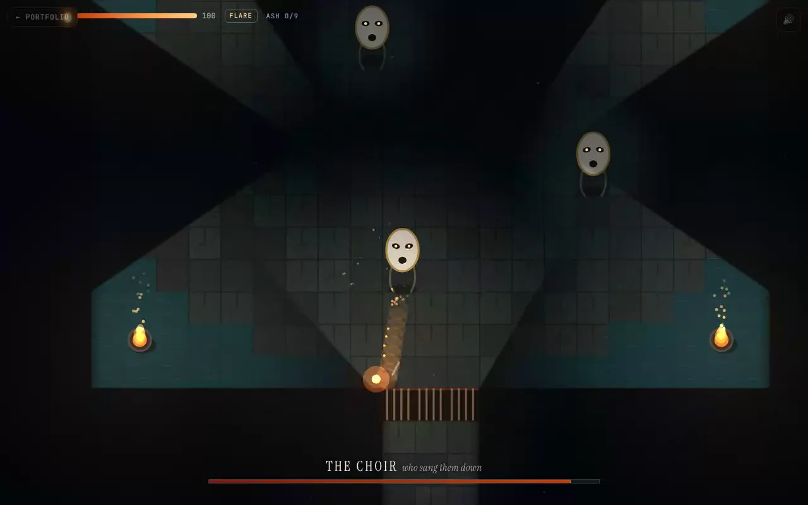
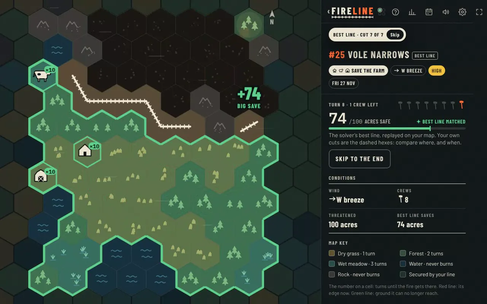
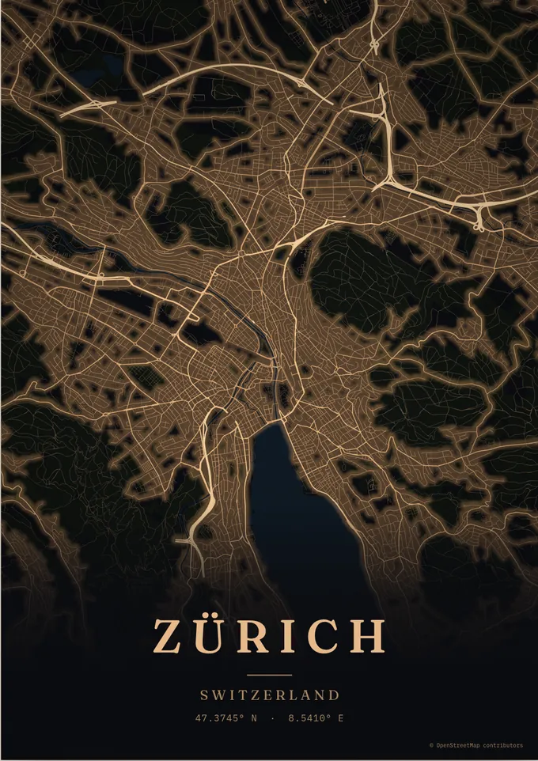

PortfolioDesign engineer · Birmingham, UK
Mohamed Sucule
Interfaces, designed and built.
A game lit by its own flame, a daily puzzle site, posters you would hang and a story told by scrolling. All live in the browser.
PortfolioDesign engineer · Birmingham, UK
A game lit by its own flame, a daily puzzle site, posters you would hang and a story told by scrolling. All live in the browser.
mohamed-sucule.github.io/Projects


